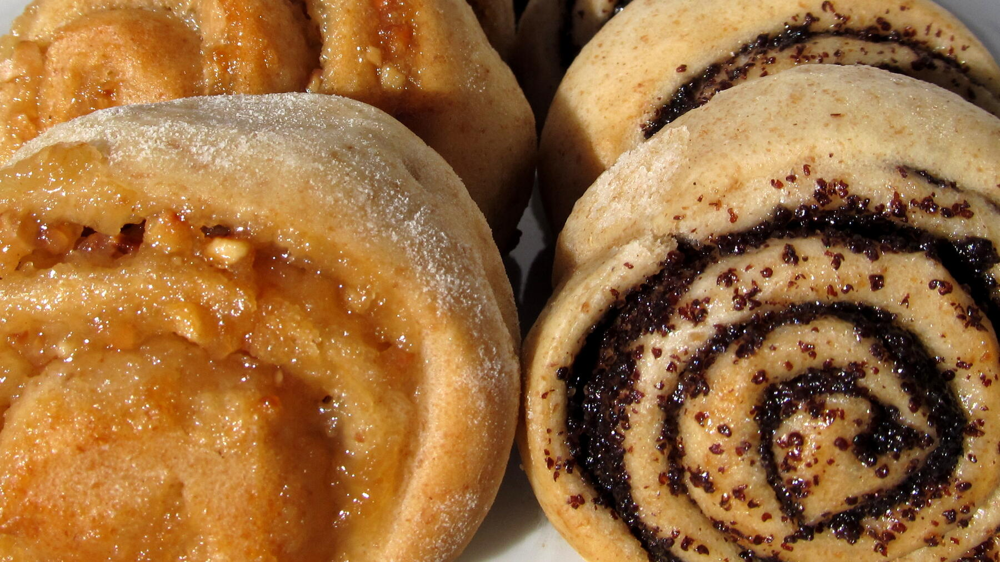

Zurück zur Übersicht
Brombeer-Quark-Schnecken
Hefeschnecken mit einer Füllung aus Quark, Grieß und Raspelschokolade und frischen Brombeeren, dicht an dicht in der Springform gebacken. Eine Portion entspricht einer Schnecke.
- Zeit
- 2 Std. 30 Min.
- Schwierigkeit
- mittel
- Kategorie
- Süßgebäck
- Ernährung
- vegetarisch
Zutaten
Portionen
Für den Hefeteig
- 500 gMehl
- 42 gfrische Hefe (1 Würfel)
- 250 mlMilch, lauwarm
- 75 gZucker
- 1 PriseSalz
- 75 gButter, weich
- 1Ei
Für die Füllung
- 200 gBrombeeren
- 250 gSpeisequark (20 %)
- 3 ELHartweizengrieß
- 1 PackungBourbon-Vanillezucker
- 30 gZucker
- 100 gRaspelschokolade feinherb
- 20 gButter, weich (für die Form)
Zubereitung
- Für den Hefeteig die Milch in einem kleinen Topf nur lauwarm erwärmen, sie sollte sich am Finger angenehm warm anfühlen (etwa 37 °C), heißer verträgt die Hefe nicht. Die Hefe hineinbröckeln, 1 TL vom Zucker dazugeben und rühren, bis sich die Hefe aufgelöst hat. 5–10 Minuten stehen lassen, bis sich kleine Bläschen bilden.
- Das Mehl in eine große Schüssel geben und mit dem restlichen Zucker und dem Salz mischen. Hefemilch, weiche Butter in Flöckchen und das Ei dazugeben. Mit den Knethaken des Handmixers erst auf niedriger, dann auf höchster Stufe etwa 5 Minuten kneten, bis der Teig glatt ist und sich vom Schüsselrand löst. Klebt er noch stark, esslöffelweise etwas Mehl einarbeiten.
- Den Teig zu einer Kugel formen, die Schüssel mit einem sauberen Küchentuch abdecken und den Teig an einem warmen Ort etwa 1 Stunde gehen lassen, bis sich sein Volumen ungefähr verdoppelt hat.
- Die Brombeeren waschen und gut abtropfen lassen. Quark, Grieß, Vanillezucker, Zucker und Raspelschokolade verrühren.
- Eine Springform (Ø 28 cm) mit der Butter fetten. Den Teig mit bemehlten Händen aus der Schüssel nehmen und in zwei gleich große Portionen teilen. Auf einer leicht bemehlten Arbeitsfläche zu zwei Rechtecken (ca. 40 × 15 cm) ausrollen.
- Jedes Rechteck mit der Hälfte der Quarkcreme bestreichen und die Brombeeren darauf verteilen. Den Teig von der langen Seite her aufrollen. Beide Rollen in je 10 Scheiben schneiden und in die Springform setzen. Abgedeckt 15 Minuten gehen lassen.
- Bei 180 °C Umluft (200 °C Ober-/Unterhitze) auf der unteren Schiene 25–30 Minuten backen und lauwarm abkühlen lassen.
Tipp: Statt frischer Brombeeren geht auch eine tiefgekühlte Beerenmischung. Die Früchte vorher auftauen lassen.
Hinweis: Das Heft verweist für den Hefeteig auf eine eigene Seite, die nicht im Ordner liegt. Hier steht deshalb ein klassischer süßer Hefeteig in passender Menge.